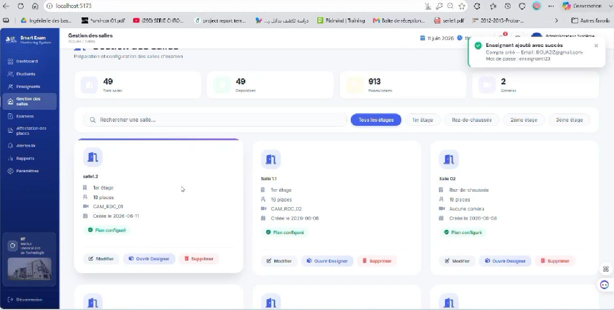
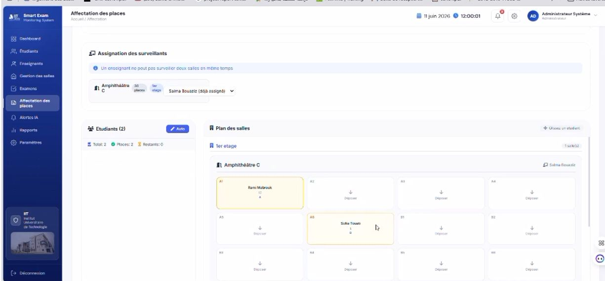

ESPACE ADMINISTRATEUR

Interface administrateur
Gestion des salles, configuration des espaces et accès aux fonctionnalités d’administration.
Démonstration vidéo — espace administrateur.
Système d’analyse de vidéos de salles d’examen pour faciliter l’identification de comportements normaux et anormaux.
Un pipeline de Computer Vision associé à une application web pour accompagner la gestion des examens et la consultation des analyses.
Le pipeline associe la préparation d’un dataset issu de vidéos, l’extraction de frames, l’annotation, la détection des étudiants et la classification de comportements, puis une application web de gestion et de consultation des résultats.
Python · TensorFlow/Keras · YOLOv8m · ResNet50 · ViT · React · FastAPI · MySQL
Résultats expérimentaux sur l’ensemble de test : ViT 93,57 % d’accuracy ; modèle hybride ResNet50 + ViT 92,40 %. Le modèle hybride a présenté la plus faible loss de test parmi les modèles comparés selon les résultats du projet. Ces chiffres ne sont pas des performances de production.
Le modèle hybride a présenté la plus faible loss de test parmi les modèles comparés, selon les résultats du projet. Ces mesures sont expérimentales et ne représentent pas des performances en production.
Captures et vidéos issues du projet : sélectionnez une image pour l’agrandir ou lancez la démonstration correspondant à chaque rôle.

Gestion des salles, configuration des espaces et accès aux fonctionnalités d’administration.
Démonstration vidéo — espace administrateur.

Consultation des examens et affectation des étudiants aux places dans les salles.
Démonstration vidéo — parcours enseignant.
Cliquez sur une capture pour l’ouvrir en grand format.
Retrouvez l’ensemble des projets ou contactez-moi pour échanger sur les choix techniques et les apprentissages.